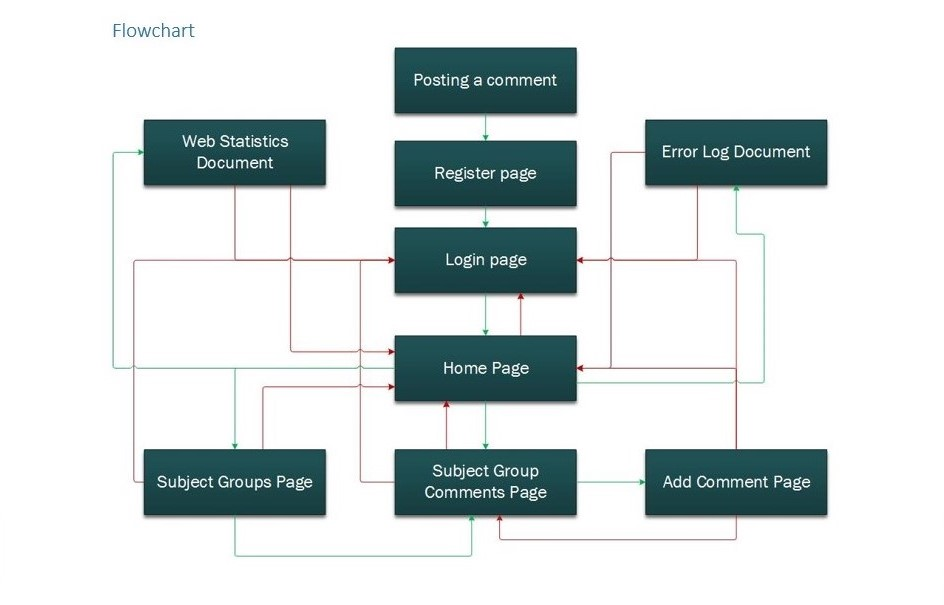

Projects
Prototype Discussion Board Project
Project summary
- Project objectives stated
- Screen design, flowchart and storyboard creation
- Web language discussed and chosen
- Website developed
- Final designs shown
- Possible improvements discussed
Introduction
This project contains interface designs that consist of screen designs, flowcharts and storyboards to guide the developers
through the build, development code that thoroughly ensures each aspect of the design is to a professional
standard, as well as final designs that show how the features within the build are clearly expressed.
Planning
Project Objectives:
|> Show the last 5 comments
|> Group comments by subject
|> Show all the comments in a subject
|> Allow new comments to be added
|> Identify users through a dynamic login system
|> Allocate comments to users based upon their login
|> Capture any errors to an error log and provide an export mechanism to allow the data to be analysed in Excel
|> Capture web statistics and provide an export mechanism to allow the data to be analysed in Excel
To meet these project objectives, screen designs were the first step to plan the discussion board
Example:

Once the screen designs were complete, the flowchart was next in line for creation.
Example:

Now that the flowchart has been created, storyboards for both computer and mobile devices will be drawn up.
Example:


Development
To develop the planned out discussion board, the web server scripting language of PHP was chosen due to the database server
compatibility and critical functions that are unique to PHP. However, the downfall of huge amounts of time spent sending requests
and receiving pages to display is an big impediment to near all users. Nevertheless, the discussion board development was started
using just HTML, CSS, JavaScript and PHP.
Code Snippets:


Final Submission
On completion of the discussion board project, the result ended up almost as planned with a few minor changes here and there.
Although the website was to a professional standard, it could have been improved a great deal by implementing AJAX with PHP to
create much faster information requests that would replace the need for mass amounts of pages with only the need for page information.
Furthermore, the colour scheme and overall style could have been revised to suit a more grown up professional audience rather than
suiting a more casual younger audience since the market for discussion boards veer more towards adults than younger people.
Final Designs: